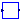
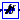

Blocks that are described with nonlinear equations
Extends from Modelica.Icons.Package (Icon for standard packages).
| Name | Description |
|---|---|
| Implements the ceiling function primarily found inside AVRs. | |
|  FEX | FEX=f(IN) |
| FrequencyCalc | Frequency deviation calculation from a rotating phasor |
|  SaturationBlockTan | Block 1 in the OEL to decide the input signal of MIN Gate |
Implements the ceiling function primarily found inside AVRs.
Extends from Modelica.Blocks.Interfaces.SISO (Single Input Single Output continuous control block).
| Name | Description |
|---|---|
| Ae | First ceiling coefficient |
| Be | Second ceiling coefficient |
| Name | Description |
|---|---|
| u | Connector of Real input signal |
| y | Connector of Real output signal |
FEX=f(IN)
| Name | Description |
|---|---|
| u | |
| y |
Frequency deviation calculation from a rotating phasor
This block uses the real and imaginary components of a Cartesian representation of a voltage phasor to estimate the electrical frequency deviation from nominal value present at the node.
Vr*der(Vi) - Vi*der(Vr)
f = -----------------------
Vr^2 + Vi^2
The calculations are done using the filtered derivative of the real and imaginary parts of the phasor representation. The user is required to set proper values for initialization of the calculations, together with a smoothing filter time constant, used to filter the derivative components.
The calculated frequency is just an estimate and can deviate by a certain margin of error.
| Name | Description |
|---|---|
| start_guess | |
| real_start | Phasor initial real part |
| imag_start | Phasor initial imaginary part |
| Ts | Smoothing filter time constant [s] |
| Name | Description |
|---|---|
| real_part | |
| y | O/P is in rad/sec |
| imag_part |
Block 1 in the OEL to decide the input signal of MIN Gate
| Name | Description |
|---|---|
| r | Exiciter parameter |
| f | Exiciter parameter |
| Name | Description |
|---|---|
| p1 | |
| n1 |